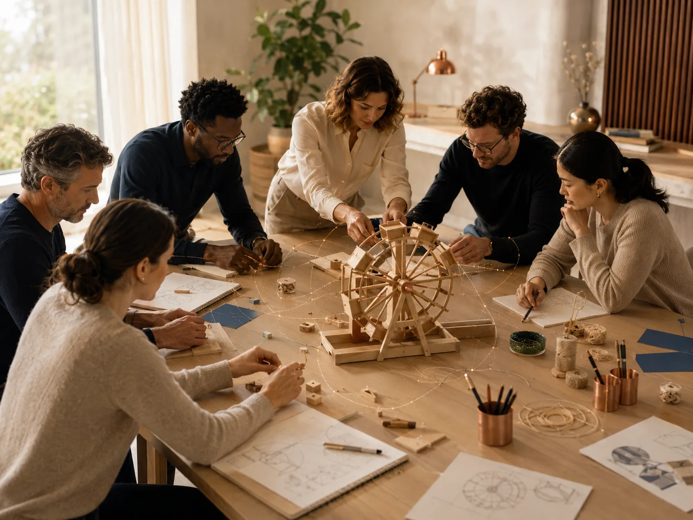
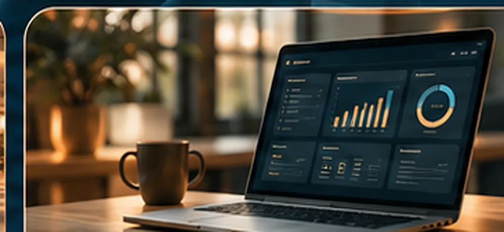

Formation
Devenir Manager · Florian Dhaussy
Adopter une nouvelle posture, affirmer sa légitimité et apprendre à mobiliser une équipe.
Voir la ficheACCOMPAGNEMENTS NORIA
Développer les compétences et faire évoluer les pratiques professionnelles.
EXPLORER LES PROPOSITIONS
Chaque fiche présente les bénéfices, le format et le parcours de contact.

Adopter une nouvelle posture, affirmer sa légitimité et apprendre à mobiliser une équipe.
Voir la fiche
Donner, recevoir et solliciter des retours constructifs avec justesse et authenticité, pour transformer les échanges en occasions de progrès.
Voir la ficheDévelopper une communication commerciale assertive et une négociation constructive, avec les clients, les fournisseurs et les partenaires.
Voir la ficheRendre une explication compréhensible, guider une première pratique, vérifier ce qui a réellement été appris et ajuster son accompagnement.
Voir la ficheUne première expérience réelle de conception et d’animation : analyser un besoin, concevoir une progression, animer une mini-séquence et vérifier ce qui a été appris.
Voir la ficheTransformer une expertise métier en capacité de faire apprendre : accueillir, observer, guider, corriger et vérifier l’autonomie en situation de travail.
Voir la fiche
Utiliser l’IA générative pour préparer ses échanges, améliorer son organisation et explorer des pistes, tout en gardant la responsabilité des décisions.
Voir la fiche